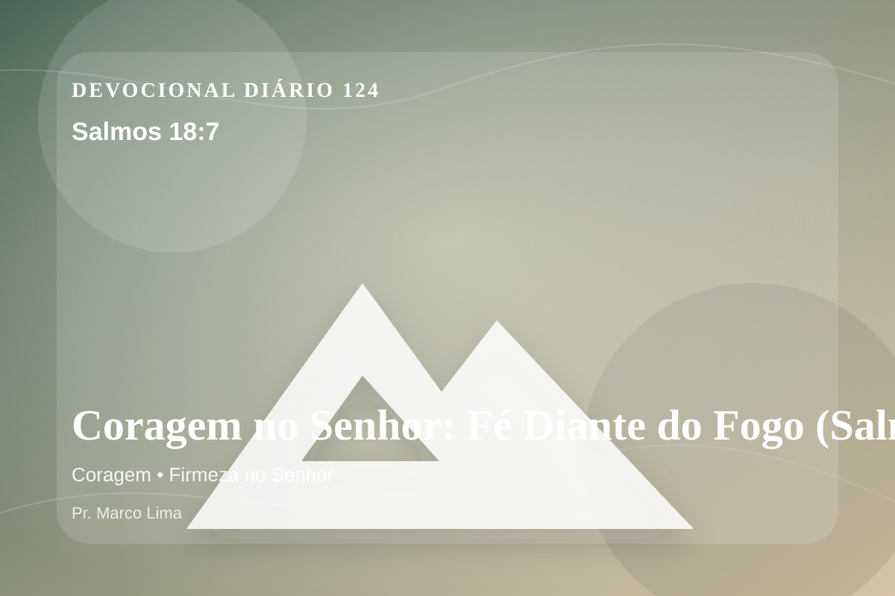

Coragem no Senhor: Fé Diante do Fogo (Salmos 18:7)
Então a terra de abalou e tremeu; e os fundamentos dos montes de moveram e foram abalados, porque ele se irritou.
Pensamento
Ao voltar a este texto, perceba um detalhe prático: a fé também amadurece quando a resposta demora. Há dias em que precisamos de uma resposta imediata; há outros em que Deus nos dá algo melhor: uma verdade para sustentar a caminhada. Salmos 18:7 faz isso.
Salmos 18:7 chama o coração a ouvir Deus com reverência e responder com fé prática. A Palavra não foi dada para enfeitar pensamentos religiosos, mas para conduzir pessoas reais ao Senhor.
O tema de coragem precisa ser recebido com simplicidade e seriedade. Receba esta Palavra como convite pastoral: Deus está tratando não apenas circunstâncias, mas o coração. A coragem bíblica nasce da presença de Deus, não da autoconfiança. O Senhor não chama Seu povo a negar o medo, mas a caminhar apesar dele, sustentado pela promessa de que Ele está junto dos Seus.
O Senhor conhece aquilo que ninguém vê. Por isso, responda com sinceridade: que desejo, atitude ou decisão precisa se render ao governo de Jesus hoje?
Arrependimento não é apenas sentir peso na consciência; é voltar-se para Deus, abandonar o caminho que entristece o Senhor e confiar que a graça de Cristo é suficiente para perdoar e transformar.
Este é o evangelho que sustenta toda aplicação: Jesus Cristo morreu pelos pecadores, ressuscitou em vitória e chama cada pessoa a responder com fé, arrependimento e uma vida rendida ao Seu senhorio.
Em Jesus, o convite de Deus é claro: venha como está, mas não permaneça como está. A graça que perdoa também transforma.
Faça deste dia um altar simples: menos justificativas, mais rendição; menos pressa, mais escuta; menos controle, mais confiança no Senhor.
Para Praticar Hoje
- Leia Salmos 18:7 lentamente e destaque uma palavra ou expressão central do texto.
- Confesse a Deus um pecado, resistência ou frieza espiritual que esta Palavra revelou.
- Declare sua fé em Jesus Cristo e pratique hoje uma atitude concreta de arrependimento e obediência.
Oração
Pai, eu não quero viver dominado pelo que me ameaça. Salmos 18:7 me mostra que Tu és maior que qualquer gigante diante de mim. Dá-me a ousadia de quem confia em Deus. Que isso se torne vida em mim.
{kind=link}